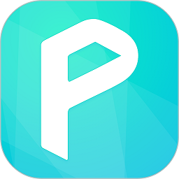

吃了十年药换了六款提醒器，最终留了 Medisafe
从 Pills On Time 到系统日历再到 Medisafe，一款医疗级提醒器到底比通用工具好在哪？HIPAA 合规、自适应提醒、健康数据同步——对比之后才发现差距不在功能数量而在数据能不能真的用起来。
如果你是那种每天得按时吃两三种药的人，肯定被提醒器折腾过。系统日历太蠢，你迟到了它也不会催你；Pills On Time 这类通用工具倒是会响，但换个时区旅行就乱成一锅粥，而且它们根本不敢碰医疗数据——那意味着没法对接 Apple Health、没法同步硬件读数、更没法在多种药之间做相互作用检查。
Medisafe官网 上清楚标注了自己是一款拿了 HIPAA、GDPR 和 ISO 27001 三项合规认证的医疗级用药管理平台，服务覆盖全球数百万患者。如果你还在纠结「提醒吃药这事至于用专门 App 吗」，看完这篇应该能有答案。
同类软件格局里它排在哪儿
用药提醒这个赛道其实是个断层市场。最下层是系统自带的日历和闹钟，零成本但零智能；中间层是 Pills On Time、MyTherapy 这类通用提醒器，能建药物条目、按时推送，但数据到 App 为止，不会和你的健康生态打通，也不敢碰医疗级的数据处理；最上层就是 Medisafe 这类走合规路线的医疗应用，它的目标用户不是「想记着吃药」的人，而是「有慢性病需要长期管理」的人。
这三层之间的差距不是功能数量的叠加，而是一个本质问题：你的用药数据是只存在一个 App 里，还是能成为你整个健康管理链条的一部分？Medisafe 选了后者，代价是合规成本极高、市场教育更慢，但换来的是其他选手根本进不来的护城河。
三个别家用不出来的差异化
迟到了它会自己改时间表
Medisafe 的提醒不是刻板的推送器——它会学习你的习惯。如果你早上 8 点那顿连续三天标记为「迟到」，下一次它会在 7:45 就推一条预提醒，时窗也会自动微调。这些行为全都可手动关掉或改参数，不会强制你迁就算法。
旅行换时区时更能体现差距。我带 Pills On Time 出国，要么关掉提醒要么手动改所有时间，改完还怕自己漏了一条。Medisafe 检测到系统时区变了之后，会保持每款药的「绝对时间」不变，直接按当地新时区算推送时间，而且不会打乱各药之间的间隔——早上 8 点和晚上 8 点这顿药，跨了十二个时区之后还是稳稳相差 12 小时。

医疗数据真的在生态里流动
这是 Medisafe 和通用提醒器最本质的区别，也是 HIPAA 合规带来的直接好处。
它和 Apple Health 是双向同步的——你在 Medisafe 里手动录的血糖、血压会自动写入 HealthKit，反过来 Apple Watch 的血氧读数、Oura 环的睡眠数据也能自动导入 Medisafe。美国区还支持直接从 Apple Health Records 拉处方，省去手动建条目。通用工具做不到这一点，因为它们没有合规资质，不敢碰医疗数据。
Android 端情况稍复杂——Google Fit 只有单向导入、反向写入支持有限，但如果你用 Wear OS，手动录的数值一样会进入报告和相互作用检查器，核心功能不受影响。
不止管提醒，还给内容和陪伴
Medisafe 的资源中心覆盖了房颤、慢阻肺、精神健康、2 型糖尿病等 10 多种常见病的定制内容，不是硬广而是和制药厂合作的患者教育材料。这背后是 Medisafe 的企业端护城河——制药厂会和它合作做患者数字化陪伴计划，从 titration 递增方案引导到教育内容推送再到合规前提下的数据收集，整条链路都打通了。
对普通用户来说，这意味着你不用跳出 App 去搜「这个药有什么禁忌」，翻一下Medisafe文档里的资源中心部分就能找到针对你的病症的专门解释。当然 App 也明确声明这些内容不构成医疗建议，只是帮你更好地理解自己的疗法。
它为这些优势付出了什么
先说门槛。如果你只是偶尔吃个感冒药，Medisafe 的配置流程可能让你觉得太复杂——从官方下载拿 App 之后要填药物名称、剂量、频次，还要设置提醒窗口。通用提醒器打开填个时间就行。这个差异对你来说到底是「专业」还是「麻烦」，取决于你管理的是「一种药」还是「一个治疗方案」。
再说平台限制。Apple Health 双向同步是 Medisafe 的明星功能，但 Android 端就打了折扣，Google Fit 只能单向导入。Apple Health Records 的处方自动导入目前也只覆盖美国区的 100 多家医院，国内用户享受不到。不过手动录入在两端都是完整的，核心的相互作用检查和报告功能不受平台影响。
最后是免费版的功能限制。Medisafe 免费版能用基础的提醒和手动录入，但一些高级功能比如 AI 相互作用检查、多家庭成员管理、自定义报告模板需要 Pro 订阅。如果你是一个人管理自己的用药，免费版完全够用；如果是帮家人一起管，Pro 版的性价比很高。

选购结论
每天 1~2 种药、没有慢性病、不需要和健康生态打通——系统日历或者 Pills On Time 足够了，没必要为合规认证付费。
有慢性病、每天 3 种以上药、在 Apple 生态里有健康数据沉淀（Apple Watch、Oura 环、血糖仪）、或者需要帮家里人一起管理——Medisafe 是目前这个赛道上体验最完整的选择。它的优势不在「提醒声音够不够响」这种表面功能，而在数据真的能流动、能被利用、能帮你把用药这件事从「一个闹钟」变成「健康管理的一环」。
我身边有两位朋友因为用 Medisafe 半年后和 Apple Health 的数据联动，在体检时被医生追问用药方案，发现了其中两种药的相互作用风险。这种事通用提醒器做不到——因为它们根本不敢碰你的医疗数据。
如果你正处在「换了几款提醒器都觉得差点意思」的阶段，Medisafe 值得试。它不是完美的，但在「严肃对待用药管理」这个细分上，目前没有对手能把合规、智能和生态联动这三件事同时做透。顺手说一句，本文涉及的合规解读和资源中心资料我做了归档，考虑到不同地区的访问情况，分别同步在了 GitHub、Gitee 和 GitCode 上，需要查阅的朋友可以自行前往。